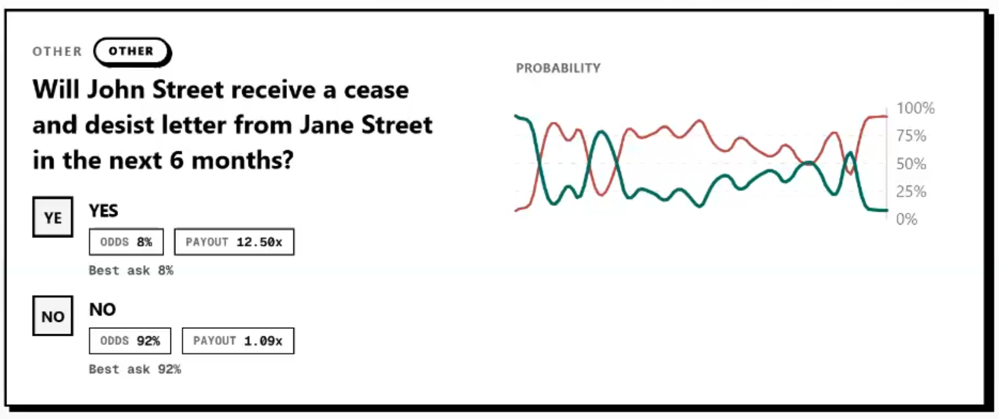
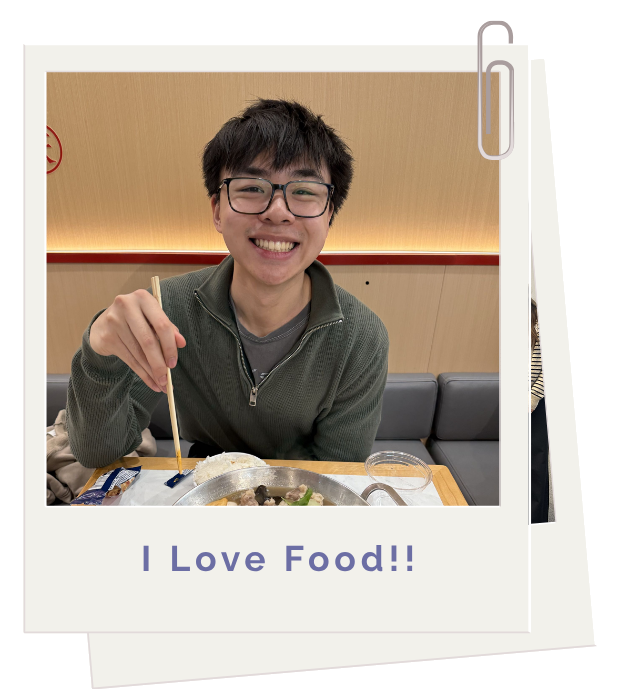
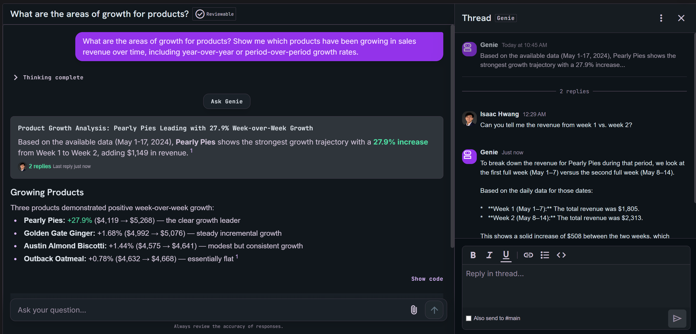

John Street
A campus prediction app specifically built for WashU events.

I love creating things that solve real problems or make someone's day a little bit more entertaining. I have shipped agents at U.S. Bank and scaled my on-campus consulting firm to 30k ARR. I also launched Product Space @ WashU. Now when I have time I enjoy building fun side projects with AI and emerging tech, experimenting with tools to solve problems I find interesting.

A campus prediction app specifically built for WashU events.

A new way to chat with your language model by hiding away unnecessary clarifications or follow-up questions to reduce clutter in conversations.